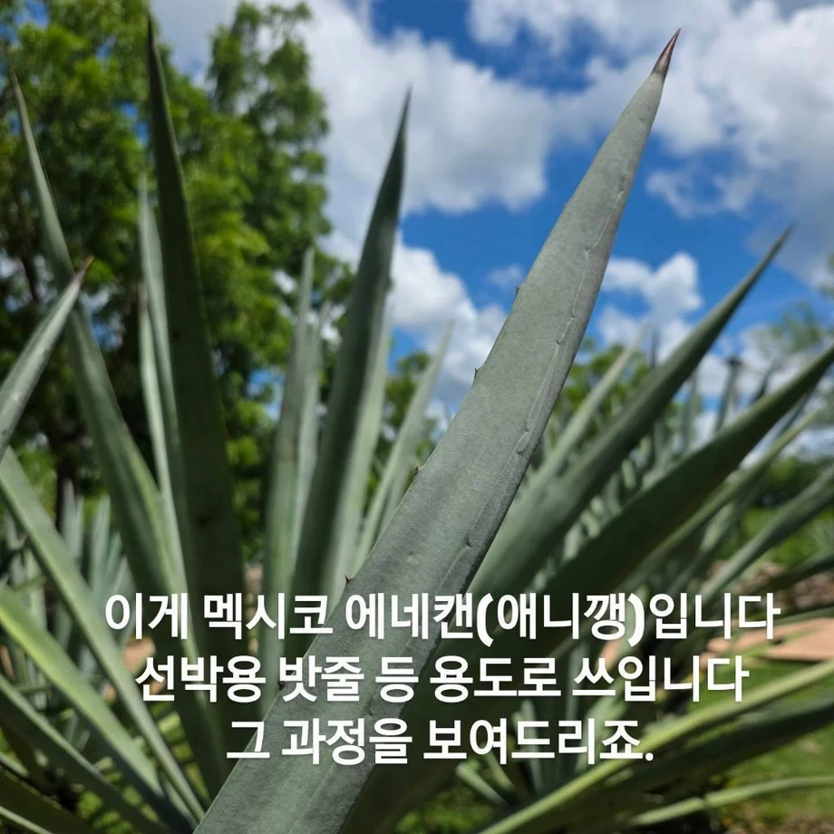
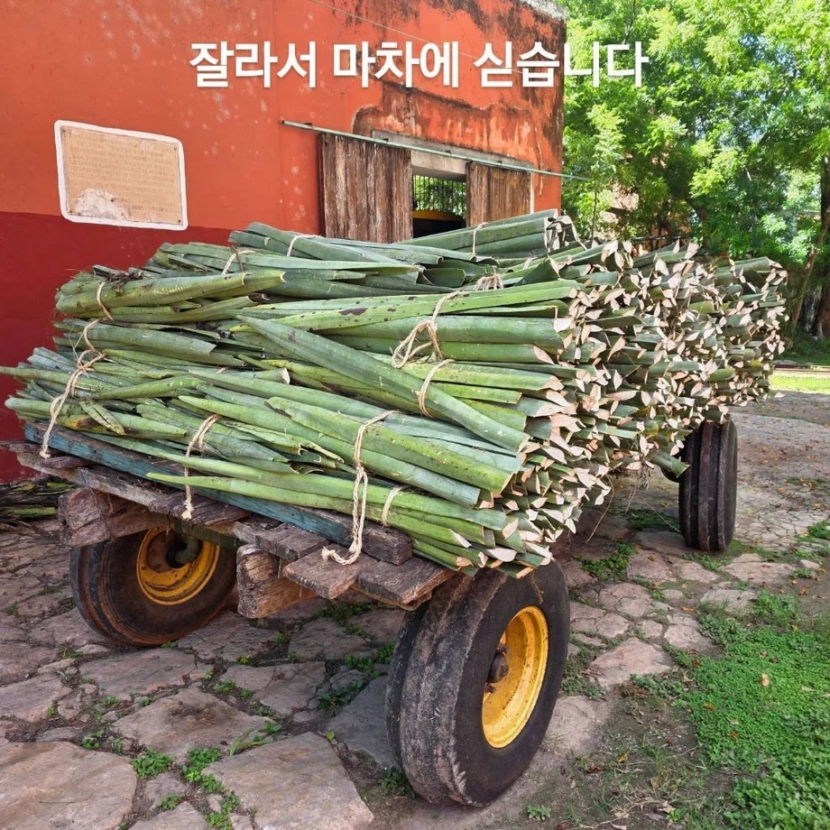
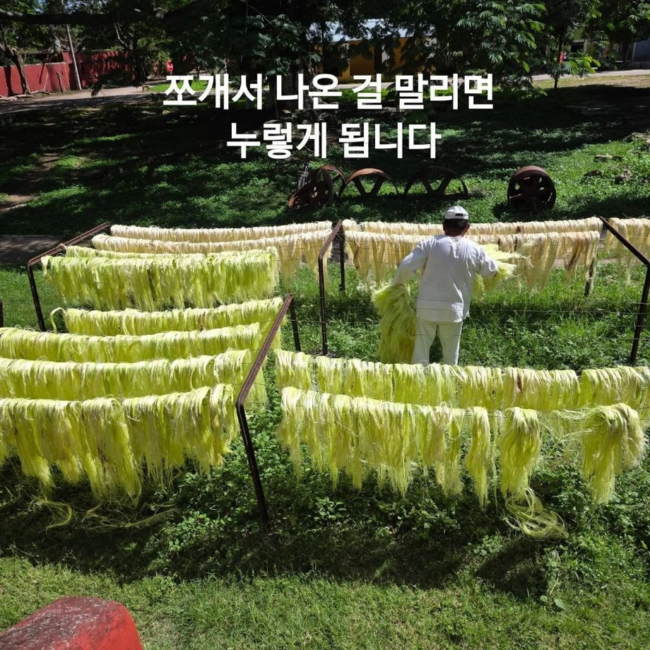
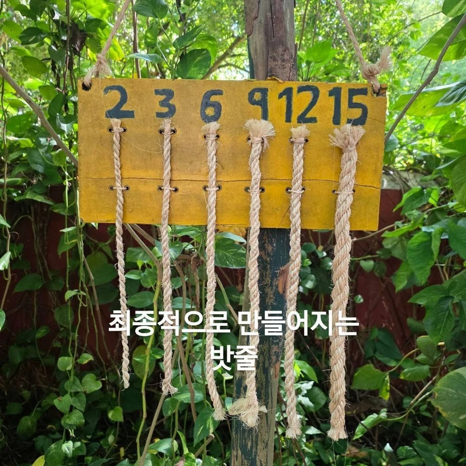
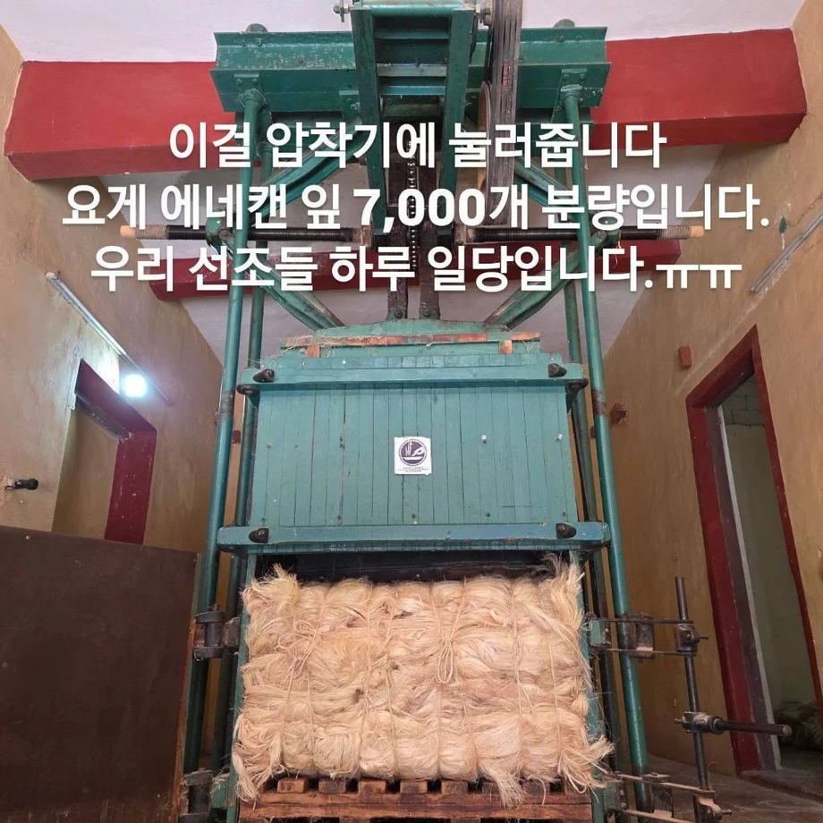

이걸 심고, 캐고, 나르기 위해 1905년 일포드호를 타고 1,033명이 멕시코로 감
저게 날카로워서 조금만 스쳐도 피가 철철 난다고 함
저렇게 번 돈을 독립군 자금으로 보냄





이걸 심고, 캐고, 나르기 위해 1905년 일포드호를 타고 1,033명이 멕시코로 감
저게 날카로워서 조금만 스쳐도 피가 철철 난다고 함
저렇게 번 돈을 독립군 자금으로 보냄
그래서 나온게 애니콜
이런구라는 왜치는거임?
선박용 밧줄에 쓸 정도로 튼튼해? 대단하네
애니꺵이 뭘까 싶었는데!